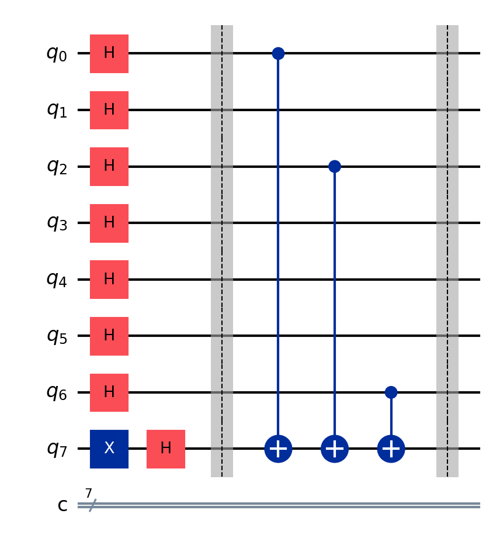
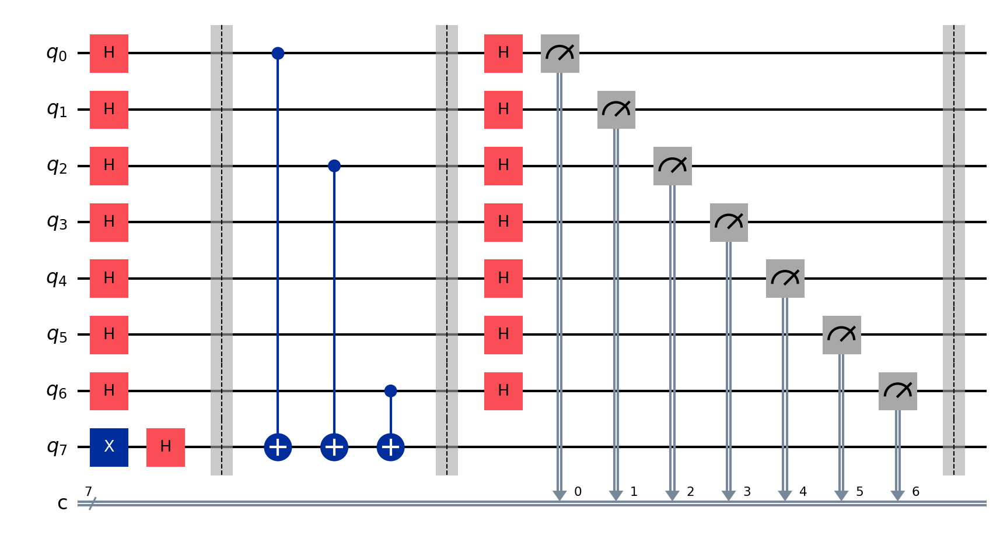

The Bernstein-Vazirani algorithm demonstrates quantum advantage by finding a hidden bit string in a single query, whereas classical algorithms require n queries for an n-bit string.
For a secret string s = s₁s₂...sₙ, the algorithm:
Enter a binary string to use as the secret number:
1. Initial state preparation with Hadamard gates
2. CNOT gates encode the secret pattern
3. Final Hadamard gates and measurement
El algoritmo de Bernstein-Vazirani demuestra la ventaja cuántica al encontrar una cadena de bits oculta en una sola consulta, mientras que los algoritmos clásicos requieren n consultas para una cadena de n bits.
Para una cadena secreta s = s₁s₂...sₙ, el algoritmo:
Ingresa una cadena binaria para usar como número secreto:
1. Preparación del estado inicial con puertas Hadamard
2. Las puertas CNOT codifican el patrón secreto
3. Puertas Hadamard finales y medición